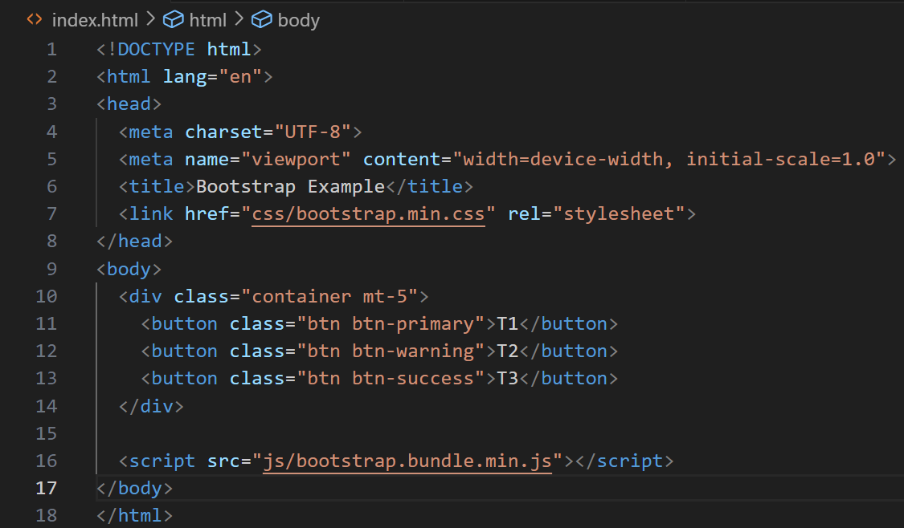
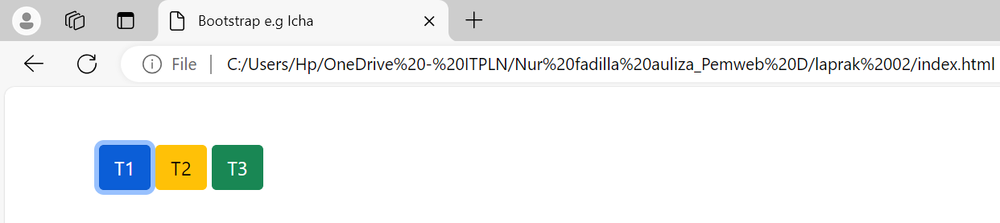

Karena CSS digunakan untuk mengubah tampilan dan tata letak elemen-elemen HTML. Dengan menggunakan CSS, kita dapat memisahkan struktur (HTML)
dari tampilan (CSS) dalam pengembangan web, sehingga kita dapat memberikan tampilan yang konsisten dan menarik bagi pengguna dan membantu menciptakan identitas visual yang
kuat untuk sebuah situs web.Sementara JavaScript digunakan untuk membuat halaman web lebih interaktiv dan berfungsi. JavaScript memungkinkan kita untuk membuat efek animasi,
validasi formulir, pemrosesan data, dan tindakan saat tombol ditekan, antara lain.
1. CSS bisa ditambahkan ke dalam HTML dengan beberapa cara:
- Cara Langsung (Inline CSS): Menulis aturan tampilan langsung di dalam elemen HTML. jika ingin membuat tulisan berwarna merah muda, cth: p style="color:
pink;">merah muda.
- Cara Internal (Internal CSS): Ditulis di bagian atas halaman web. Diletakkan dalam tag style di bagian head. Berlaku untuk semua elemen dalam satu halaman.
- Cara Eksternal (External CSS): Ditulis dalam file terpisah dengan akhiran .css, file CSS ini dihubungkan ke HTML menggunakan tag link. Memudahkan kita mengubah
tampilan semua halaman sekaligus.
2. JavaScript juga bisa ditambahkan ke dalam HTML dengan beberapa cara:
- Cara Langsung (Inline CSS): Menulis perintah langsung di elemen HTML. Contoh, tombol yang menampilkan pesan saat diklik:
button onclick="alert('Hayii Icha!')">Klik button
- Cara Internal (Internal CSS): Ditulis dalam satu tempat di halaman web. Biasanya diletakkan dalam tag script.
- Cara Eksternal (External CSS): Disimpan dalam file tersendiri (berakhiran .js), File ini kemudian dihubungkan ke HTML dengan tag script src="namafile.js".
3. CSS bisa ditambahkan ke dalam HTML dengan beberapa cara:
Contoh penggunaan CSS untuk mengubah tampilan elemen yang diatur oleh JavaScript dengan menetapkan kelas elemen dan menggunakan
JavaScript untuk mengubah properti CSSnya. Contoh, JavaScript dapat mengubah kelas elemen saat pengguna mengklik tombol,
dan CSS kemudian akan diterapkan untuk mengubah tampilan elemen sesuai dengan gaya yang telah ditentukan.
Keuntungan menggunakan JavaScript:
- Web browser dapat secara otomatis menginterpretasikan script yang telah dibuat melalui HTML dengan JavaScript.
- Mudah dipahami oleh para web developer, termasuk para pemula.
- Penanganan kesalahan lebih mudah, sehingga kita dapat memperbaiki kesalahan segera.
- Multiplatform karena dapat digunakan di semua jenis sistem operasi, seperti Windows, Linux, Android, dan banyak lagi.
- Mudah dikembangkan karena multiplatform dan dinamis, sehingga dengan mudah diperbaharui dan dikembangkan sesuai kebutuhan dan perkembangan teknologi sekarang.
- Bahasa pemrograman yang sangat cepat, ringan, dan ramah pengguna karena tidak membutuhkan sumber daya.
Keuntungan menggunakan CSS:
- Kecepatan layanan web yang baik, untuk beroperasi dengan efisien, situs web harus memiliki kecepatan loading yang cepat.
- Perawatannya mudah karena membutuhkan waktu yang lebih sedikit. karena setiap perubahan pada satu baris kode berdampak pada seluruh halaman web.
- CSS memastikan elemen gaya diterapkan secara konsisten di seluruh halaman.
- CSS meningkatkan kecepatan dan kemudahan perawatan, menghemat waktu pengembangan.
- CSS membantu tampilan situs web yang optimal di berbagai perangkat.
Contoh: 
Bootstrap di atas dapat digunakan untuk membuat tiga tombol berbeda (biru, kuning, dan hijau) menggunakan kelas.btn, .btn-primary, .btn-warning, dan .btn-sukses. Sementara kelas container membuat tata letak responsif, mt-5 menambah jarak di atas tombol.
Dengan menggunakan bootstrap CSS dan JS yang terhubung, tombol dapat dibuat lebih cepat dan terlihat lebih rapi tanpa menulis banyak CSS atau JS tambahan.
